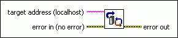

Refresh Modules VI
Owning Palette: NI Scan Engine VIs
Requires: Base Development System (Real-Time, Windows)
Discovers new I/O modules on any local or networked target. If a local I/O module is detected in a slot that was not previously deployed from a LabVIEW project, this VI creates new I/O variables for the I/O module.
These automatically-created I/O variables use the default I/O variable settings. This VI does not add the new I/O variables to a LabVIEW project, and the new I/O variables do not persist when the target restarts.

 Add to the block diagram Add to the block diagram |
 Find on the palette Find on the palette |